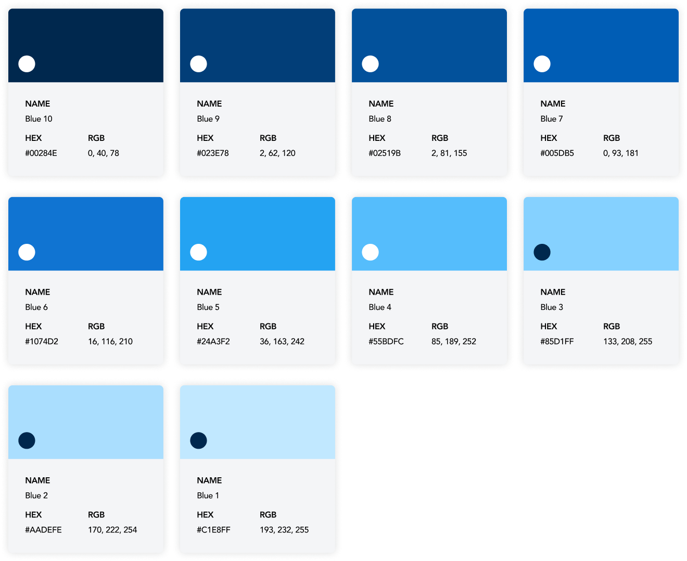
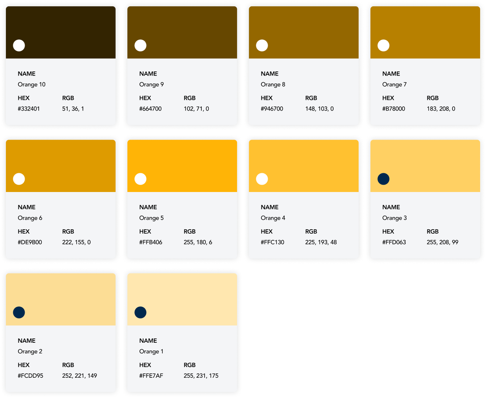
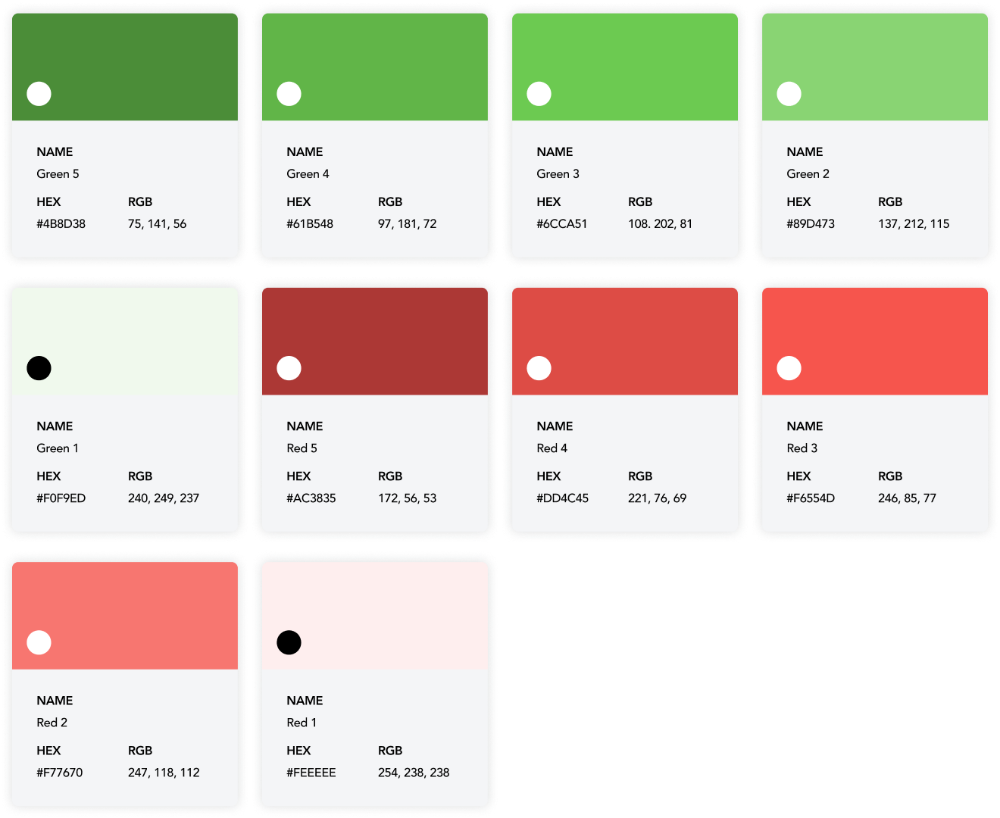
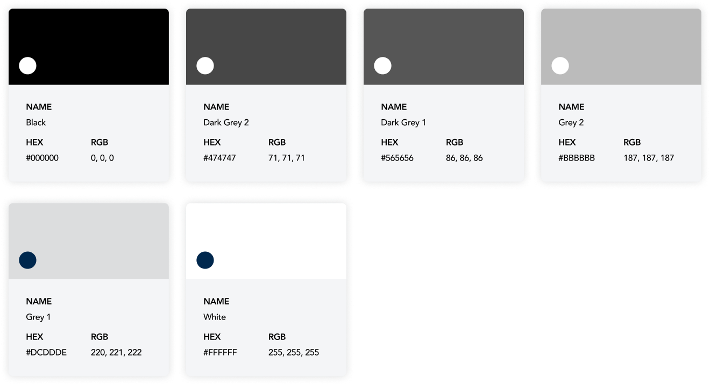

Color
Warna-warna ini dipilih menjadi ADW Pallete. Kami biasanya mencampurkannya untuk menerapkan palet warna yang konsisten di seluruh aplikasi Anda. Sebagai catatan, jangan mencampur warna palet secara acak. Karena kombinasi warna Primer, Sekunder, Aksen, dan Netral ini sudah disetujui untuk aksesibilitas yang lebih baik.
Primary Color
Secondary Color
Accent Color
Neutral Color
Previous
Logos & Usage
Next
Background